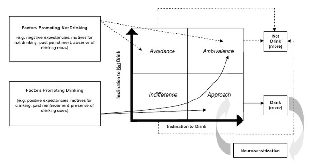

Current Projects
Recovery Study
We are currently looking for participants to enroll. Click to learn more about the Recovery Study.
Overview
The recovery study is designed to better understand the ways in which individuals recover from alcohol use disorders, as well as what the word recovery means in the context of alcohol use disorder. Participants will then receive 12 weeks of treatment provided by the psychological services center, complete biweekly phone follow-ups after treatment cessation, and attend follow-up sessions at different time points over the next few of years. We will be tracking these individuals and trying to collect data on those that continue to seek treatment or maintain sobriety for the duration of this study.
Bisexual Alcohol Use Study
Past Projects
Ambivalence Model of Craving: Re-examining the Craving-Drinking Relationship

In this NIAAA funded program of research we are examining the incremental and predictive validity of measuring craving experiences as the concurrent activation of both approach (desires to use) and avoidance inclinations (desires to not use). Utilizing both clinical trial and daily process methodology, this study will examine the dynamic longitudinal relationships between daily approach and avoidance inclinations and drinking behaviors in those diagnosed with alcohol use disorders prior to (30-day pretreatment interval), during (30-day treatment interval), and after receiving a brief alcohol intervention (30-day post-treatment interval). In addition, the study will examine how these processes change over the course of recovery, including their influence on treatment initiation and treatment retention.
Influence of Pretreatment Changes on Mechanism of Change
In this research program, we are conducting secondary analyses of numerous treatment outcome datasets to examine the influence of pretreatment changes in drinking behavior on mechanisms of change research. Preliminary data on pretreatment change suggests that approximately 50% of those seeking treatment for alcohol dependence rapidly decrease their drinking before beginning treatment and then maintain such changes throughout treatment. Such findings challenge the assumption that “major changes” begin only after treatment entry and suggest that “treatment” is only part of a process that begins weeks or months prior to treatment entry, significantly impacting the study of mechanisms of change.s